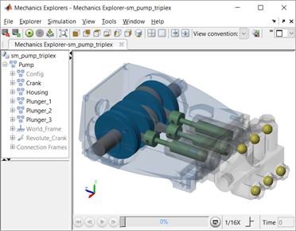

Triplex Pump with Faults Overview
This example shows how to develop predictive maintenance algorithms.

Model
1. Open Triplex Pump Model (see also model documentation)
Configure Model (use default)
Specification
2. CAT Pumps Data Sheet: 1051C
3. Step File from CAT Pumps: Model with STEP file
4. SOLIDWORKS model: CAT_Pump_1051.SLDASM
5. CAD Import: Import XML using smimport(), Imported Model
Match Nominal Behavior
6. Tune Parameters: Open Tool, Compare Results with Initial and Tuned Values
Design Fault Detection Algorithm
7. Sweep Severity of Seal Leak: Run Sweep, (see code)
8. Sweep Severity of Blocked Inlet: Run Sweep, (see code)
9. Sweep Severity of Bearing Wear: Run Sweep, (see code)
10. Generate Machine Learning Training Data: Run Short Sweep, Run Long Sweep, (see code)
11. Design Fault Detection Algorithm: Edit Live Script
12. Test Fault Detection Algorithm: Run 7 Scenarios, (see code)
Videos
13. Animation of pump
Copyright 2017-2018 The MathWorks™, Inc.
|